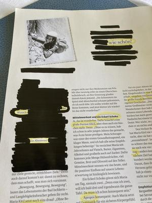
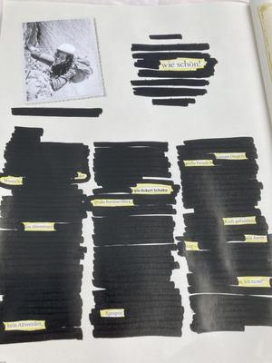
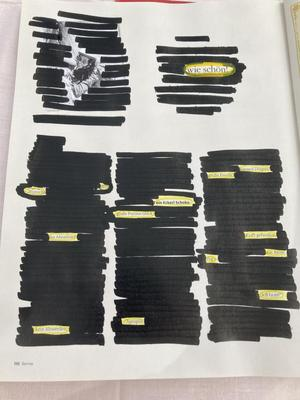

Ich finde ein Gedicht
Samstagmittag:
Ich lese den Aufruf zur Blogparade von Lily Magdalen „Blackout Poetry – Kreativität & Intuition“
Samstagnachmittag:
Mir geht die Idee nicht aus dem Kopf. Bei jedem Hundespaziergang überlege ich, welches Buch ich nehmen kann. Die Idee eins aus dem nächsten Bücherschrank zu nehmen, mit dem ich keine Verbindung habe – ja, aber widerstrebt mir.
Samstagabend:
Aber eine Zeitschrift geht doch auch oder?
Sonntagmorgen:
Ich will das jetzt versuchen! Ich liebe Experimente mit Text, mit Bild, mit Farbe. Also einen Text im Text finden. Worte die ins Auge fallen. Schwärzen um hervorzuheben. Ein Text, ein Gesamteindruck, so anders.
Sonntagmittag:
Eine Zeitschrift liegt auf dem Stehtisch – hat wohl auf mich gewartet? Einfach mal durchblättern. Ich bleibe an einer Seite hängen und habe das erste Wort bzw, zwei: „Wie schön!“
Jetzt suche ich den Text ab. Mein Verstand will das es zusammenpasst, es soll doch schön werden.
Doch Lily hat ja auch die Intuition im Titel der Blogparade.
Also aufstehen und erstmal einen schwarzen Edding suchen. Habe ich nicht, aber ich finde einen anderen schwarzen deckenden Stift.
Zurück zur Seite.
Meine Augen überfliegen die Zeilen. Worte erzeugen Resonanz.
Die Worte sollen leuchten, also umrahme ich sie in Gelb.
{kind=link}

Der Anfang
Der schwarze Stift gleitet über das Papier. Immer wieder die gleiche Bewegung. Text verschwindet, Struktur entsteht – fast meditativ.
{kind=link}

Im Prozeß
Und dann ist es da, das Gedicht:
Wie schön!Der Wunsch ins AbenteuerKein AltwerdenEin Eckerl SchokoladeGroße Portion GlückAproposKleine DingeGroße FreudeKraft gefundenEin AtemzugIch tue es!
{kind=link}

Das Gedicht
Sonntagabend:
Der Artikel ist fertig. Danke Lily für diesen schönen Impuls, es hat so viel Spass gemacht.
Versuch Du es doch auch einmal.
Kommentare